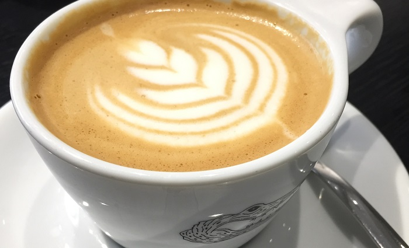

Normalerweise ist es die Mischung aus guten Produkten und einem entspannten Flair, die ein Café für mich besonders macht. In solchen Cafés könnte ich stundenlang sitzen und lesen, nachdenken und Ideen sammeln, weil die Atmosphäre mich inspiriert. Zu Man vs. Machine würde ich aber auch gehen, wenn es absolut ungemütlich wäre. Einfach nur wegen des Kaffees. Denn dieser ist unglaublich lecker. Für mich der beste, den ich bisher getrunken habe.
Nicht, dass das Man vs. Machine ungemütlich wäre. Im Gegenteil. In der modernen, etwas kantigen und trotzdem warmen Atmosphäre lässt sich der Kaffee wunderbar genießen. Man spürt sofort, dass nicht nur höchste Ansprüche an den Kaffee gestellt werden, sondern auch viel Liebe zum Detail im Design steckt.
Ich liebe die Atmosphäre dort. Die Einrichtung ist vorwiegend schwarz-weiß gehalten, die Tassen sind mit dem Man vs. Machine-Krokodil-Logo bedruckt, das Lichtkonzept ist unaufdringlich und durchdacht und sogar die Kaffeemaschinen fügen sich perfekt in das Gesamtbild ein.
Es duftet nach frisch gerösteten Arabica-Bohnen, von denen man sich auch direkt noch eine Packung mit nach Hause nehmen kann. Ich habe gelernt, dass bei Man vs. Machine ausschließlich ausgewählte Arabica-Sorten geröstet und verarbeitet werden. Diese Bohne gilt allgemein als aromatischer als die kleinere Robustabohne. Ich habe den Kaffee auch daheim probiert - die Bohnen selbst gemahlen und mit einer Chemex aufgebrüht - und auch ohne die tolle Profimaschine schmeckt er richtig lecker.
Zum Kaffee gibt es eine kleine, aber feine Auswahl an Gebäck - häufig findet sich in der Vitrine eine Mischung aus veganem Bananabread (bekommt man auch frisch getoastet!), Franzbrötchen, Rote-Beete-Schoko-Brownies, Carrot Cake … Ziemlich lecker, aber im Laufe des Tages auch schnell ausverkauft. Zu bestimmten Zeiten geht es nämlich ganz schön wuselig zu - insbesondere weil der Innenbereich recht klein ist.
Es gibt insgesamt drei Man vs. Machine Filialen in München: im Glockenbachviertel, in der Maxvorstadt und die Rösterei in der Kolosseumstraße. Wenn du einmal in der Nähe bist und guten Kaffee schätzt, kann ich es nur wärmstens empfehlen! Und wenn du weitere tolle Cafés in München oder sonst wo auf der Welt kennst, freue ich mich, wenn du mir schreibst! Ich bin immer auf der Suche nach neuen Kaffeehimmeln :)
Bis bald!
Deine Caro
Man vs. Machine
Mai 2020

Eins meiner absoluten Lieblingscafés in München ist das Man vs. Machine.
Mit Man vs. Machine verbinde ich den Duft nach frisch geröstetem Kaffee,
unglaublich leckeren Cappuccino und schickes Design mit viel Liebe zum
Detail. Vermutlich habe ich bisher in keinem Café mehr Zeit verbracht.
Ich glaube, Man vs. Machine ist so etwas wie ein Kaffeehimmel :)